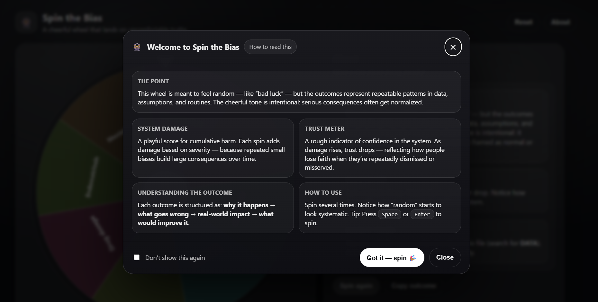

Spin the Bias

Spin the Bias is a playful, wheel-of-fortune–style interactive that explores how structural bias can show up in healthcare systems, data practices, and decision-making. The wheel feels random — but the outcomes are designed to highlight patterns: what repeats, what gets normalized, and what becomes “invisible” through routine.
Note: This is a reflective prototype (not medical advice). The “system damage” and “trust meter” are intentionally simplified to visualize how repeated small disparities can accumulate over time.
Concept & intent
The project uses a familiar and approachable interaction — spinning a wheel — to create a small moment of surprise. That surprise is then used to support reflection: when you spin multiple times, the outcomes start to feel less like isolated events and more like a pattern.
The tone is intentionally light on the surface, but the structure is serious: each outcome explains why it happens, what goes wrong, the real-world impact, and what could improve it.
How the interaction communicates the idea
- Randomness as a metaphor: the wheel mirrors how bias can feel unpredictable at the individual level.
- Repetition reveals structure: multiple spins make recurring themes visible.
- Scoring makes accumulation tangible: “system damage” and the trust meter visualize gradual erosion over time.
- Consistent format: the same outcome structure supports comparison across categories.
My role
- Concept development and framing
- Interaction design and UX writing
- Implementation (single-file web prototype)
- Visual design + accessibility choices (reduced motion, light/dark mode)
- Testing and iteration (spin behaviour, pointer logic, text fitting)
Reflection
A key challenge was balancing tone and topic: the interface needed to be engaging without making light of lived experience. I approached this by keeping the language concrete and respectful, while letting the playful mechanic function as an entry point.
The project also reinforced how “neutral” interface decisions (defaults, labels, metrics, feedback animations) influence what users notice — and what they overlook.